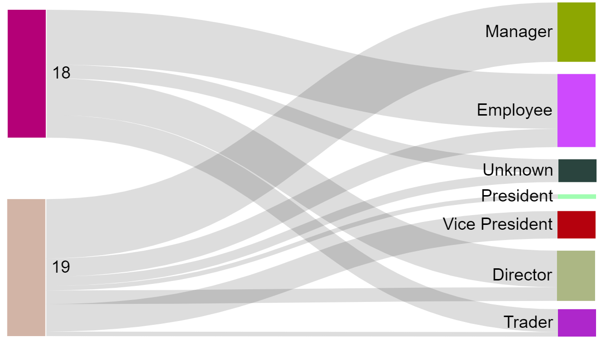
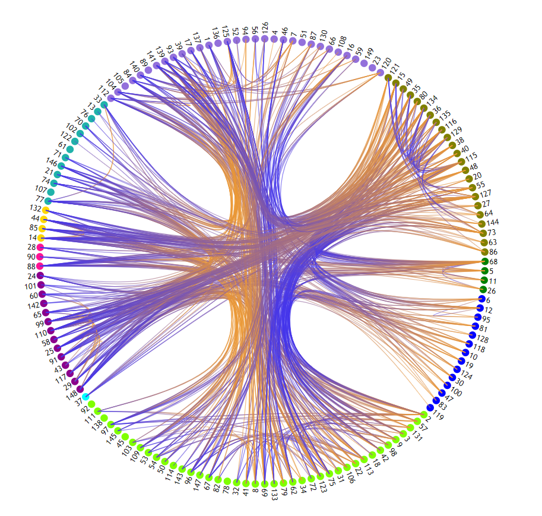
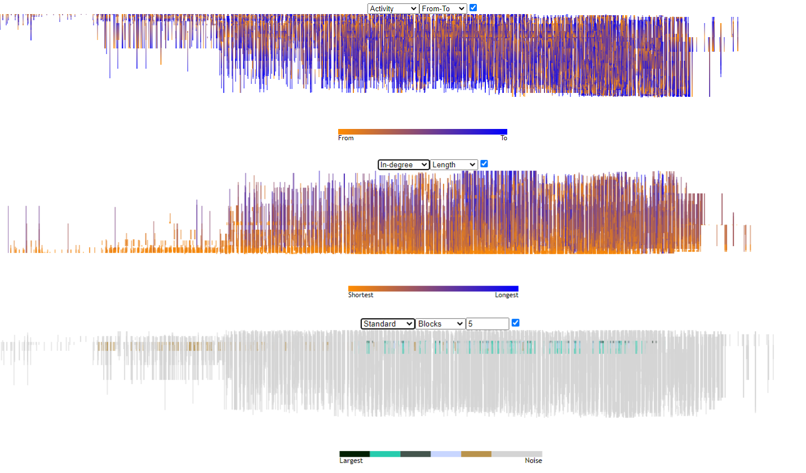

Sankey
Sankey diagrams are flow diagrams that are commonly used to display the flow of material or energy in a process.
It uses arrows with a size proportional to the amount of material or energy to intuitively display quantities.

Hierarchical edge bundeling

Hierarchical edge bundling is a static visualisation that uses the in-herent hierarchy of a graph to cluster edges,
in order to reduce visualclutter.
Current version notes
- Edge gradient is to be fixed added
- Outgoing edges highlight need to be raised
- Two-way edges highlight need to be added
- Start button cannot be used twice
Massive sequence view
The massive sequence view,
is an integrated time line approach which orders nodes on the y-axis and encodes time on the x-axis.
This way a large time window can be displayed.

Gestalt
Gestalt lines are a way of using gestalt principles to encode information about tuples of nodes in a condensed intuitive format.
Gestalt has not yet been added and is still in the research phase.
General notes
- Homepage needs to be added
- Buttons on visualisation page need to be styled
- Selected file needs to be properly displayed on page reload